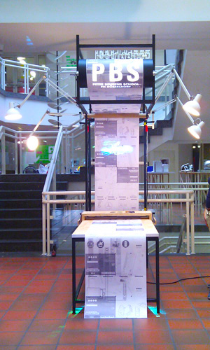
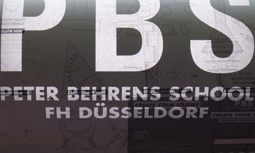
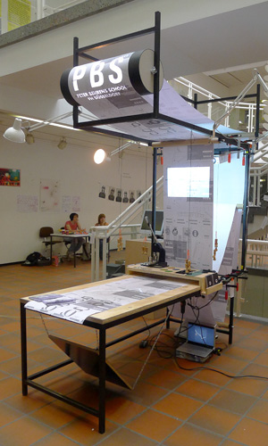
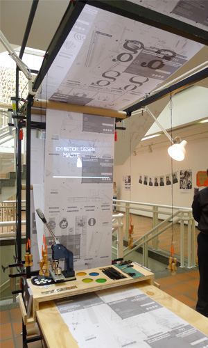

architecture
exhibition design
lets
pbs-machine
in your neighbourhood
living in a megacity I
living in a megacity II
photography
about
contact
almarinheiro@gmail.com | +49(0)176 96 479 441
| architecture exhibition design lets pbs-machine in your neighbourhood living in a megacity I living in a megacity II photography about contact almarinheiro@gmail.com | +49(0)176 96 479 441 |
|---|
| pbs-machine |
|  |
| The goal of this project was to design a booth for a students trade show in order to present the existing architecture and design courses of the Peter Behrens School - FH Düsseldorf. The main concept was to bring a small part of the PBS - FH Düsseldorf to the booth and therefore use daily elements, like table or cardboard rolls, to built the main structure of this "machine". This project was developed by all the master students of exhibition design course, devided in three groups: architecture, projection and layout. |
|  |
|  |
 |
|  |